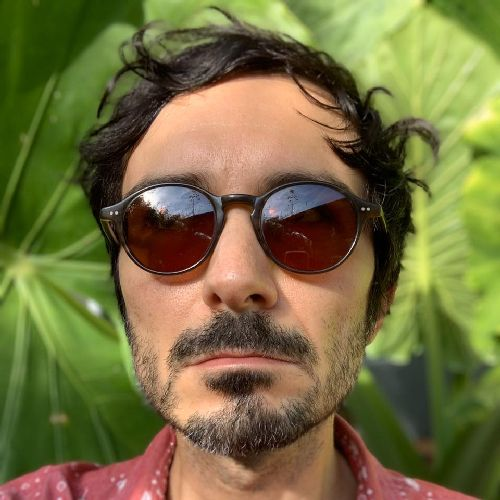

About
Biography
Don Miller is an artist and educator based in Gainesville, FL. He performs live visuals in real time under the alias NO CARRIER. Miller works with video synthesizers and nearly obsolete electronics to create psychedelic low-resolution video art. Part of the 8bitpeoples artist collective, he performs, exhibits, and lectures worldwide. Much of the software used in the NO CARRIER project has been released for free and is open source.
Miller graduated from NYU's ITP program in 2011. He currently works for Code.org as a Regional Manager, working with school districts and partners to expand access to computer science education in the Southeastern United States. Before that, Miller served as the Senior Director of Computer Science Academics for the NYC Department of Education. As part of the Mayor's CS4All initiative, he worked to bring computer science to all 1.1 million NYC public school students, from elementary to high school.
He has also worked as a Learning Designer at the Institute of Play in NYC, developing project-based and game-like curricula for Quest to Learn in Chelsea. Before that he spent time teaching creative coding to undergraduate students at CUNY schools in NYC. From 2009-2013 Miller served as a Director of Playpower, a non-profit organization that works to bring low-cost educational games to developing countries.

Contact
Find me on LinkedIn here: http://www.linkedin.com/in/dmiller80
Click here to send me an e-mail.
Click here to find me on facebook.
Click here to follow me on Twitter.
Selected Media Coverage
07.07.13 - Art Repurposed - An Eclectic Mix Of Creativity, Technology @ Jamaica Gleaner
05.08.13 - Indie Tech Talk 10 with Don Miller @ YouTube
02.26.13 - Experiências Transmídia @ Experiências Transmídia Blog
05.09.11 - Mod MTV interview "Tecnologias Obsoletas" @ MTV Brazil
10.23.10 - Q+A: A Chat With NES Homebrew Visual Artist Don Miller - Motherboard
10.13.10 - Code Eroded: At GLI.TC/H - Rhizome
10.05.10 - NES glitch art creator - Make: Online
09.29.10 - glitchNES 0.2 - Vague Terrain
07.12.10 - Playpower: Bringing 8-Bit Learning to the World - racketboy
07.06.10 - Play Power: esquema colaborativo para games educacionais 8-bit - O Globo (Brazil)
07.04.10 - Art in the Air - Breadboard Philadelphia
03.17.10 - Music is their game - The Philadelphia Inquirer
03.16.10 - Chip Music: A History of the Future - Planet Mag
12.18.09 - Playlist (catalog PDF link) - LABoral Centro de Arte y Creación Industrial
09.07.09 - Geek of the Week: Don Miller (AKA ‘No Carrier’) - Geekadelphia
09.06.09 - NO CARRIER: Visuals Through Code - 8bit today
07.16.09 - Q&A: Don Miller, aka NO CARRIER - Keystone Edge
05.09.09 - Reformat The Planet 1.5 - 2 Player Productions
03.23.09 - glitchNES: make visuals with your Nintendo - Create Digital Motion